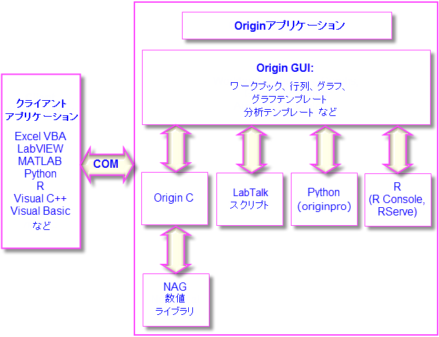

Originのプログラミング
Originのプログラミング
- 
Originの使用が広範囲になると、プログラミングによって既存機能にアクセスしたり、自分で作成したルーティンやツールを追加したり、他のアプリケーションと連携したり、といった要望があるかもしれません。この章ではOriginのプログラミング機能で実現可能なオプションの概要を説明しています。詳細な情報については、Originのプログラミングに関連するリソースを確認してください。
- プログラミングのガイドや言語リファレンス、サンプルコードなどのドキュメントはOrigin製品のヘルプメニューから利用可能です。
- オンラインでプログラミングドキュメントが利用できます（www.originlab.com/doc）。
- 以下のようなキーワードをインターネットブラウザで検索すれば、該当するオンラインドキュメントを表示可能です：labtalk importing、originc interpolate、labview origin send data
- Originのプログラミングフォーラム（www.originlab.com/forum）
- LabTalk、Python、COM サーバとクライアントなどのサンプルファイルをOriginのサンプルフォルダで確認できます。
Originのプログラミング
LabTalk
Programming Origin, LabTalk
LabTalk
Scripting
LabTalkは、Originのほとんどの機能にアクセスできるスクリプト言語です。LabTalkではワークシート列、グラフレイヤ、データプロットなどのOriginオブジェクトのプロパティを読み取ったり、変更することができます。LabTalkスクリプトは、高度なデータ分析処理を実行するXファンクションを呼び出すこともできます。
LabTalkスクリプトの実行には、多くのオプションが用意されています。複数行のスクリプトはファイル内のセクションとすることができ、これらの独立したセクションは、スクリプトウィンドウやコマンドウィンドウのコマンドプロンプトにあるユーザインターフェース、あるいは、ワークシートやグラフに追加したボタン、ユーザが作成したツールバーボタン、カスタムメニューコマンドから実行できます。

|
以下のミニチュートリアルでは、ワークシートにボタンオブジェクトを追加し、このボタンに、基本的な統計処理を実行して結果をワークシートに出力するLabTalkスクリプトを組み込んで実行する方法を示します。
- Originを起動し、標準ツールバーの新規プロジェクトボタンをクリックして、新しいプロジェクトを作成します。
- メニューからデータ：ファイルからインポート：単一ASCIIファイルを選択し、\Samples\Graphing\Box Chart.dat ファイルを選択します。ファイルを選択し、開くをクリックします。アクティブワークシートウィンドウにファイルがインポートされます。
- ワークシートウィンドウをアクティブにして、メインメニューからフォーマット： ワークシートの表示属性を選択します。ワークシートプロパティダイアログで、サイズタブを開き、上からのギャップの項目を25 にしてOKをクリックします。これで、ワークシートウィンドウの上部に何もない領域が追加されました。
- プロット操作・オブジェクト作成ツールバー上のテキストツールボタンをクリックします。追加した上部の何もない領域でクリックして、テキストオブジェクトに "Add Mean Label Row" と入力します。入力したらテキストオブジェクトの外側をクリックして編集モードを終了します。
- テキストラベル上で右クリックしてプロパティを選択します。プログラミングタブを開き、のあとでスクリプトを実行をボタンアップにします。以下のスクリプトをコピーして、テキストボックスに貼り付けます。
wks.userParam1 = 1;
wks.userParam1$ = "Mean";
for (int ii = 2; ii <= wks.ncols; ii++)
{
range rr = $(ii);
Col($(ii))[D1]$ = $(mean(rr),.2*);
}
- OK をクリックして設定を適用し、テキストオブジェクトダイアログを閉じます。テキストオブジェクトの見た目がボタンのようになりました。
- ボタンをクリックします。ワークシートに "Mean" というラベルの新しい行が追加され、各列のデータの平均がこのセルに入力されます。
|
|
Note: Originの組み込みスクリプト言語であるLabTalkについての詳細は、ヘルプ: プログラミング: LabTalkのドキュメントを参照してください。
サンプルファイルは、Originのインストールフォルダの \Samples\LabTalk Script Examples フォルダにあります。
|
Python
Originのプログラミング、PythonPyOriginモジュールPython
Origin内でPythonを実行するために、埋め込みPython環境を提供しています。Originは、PythonコンソールまたはOriginのコードビルダーIDEからのPythonコードのコマンドラインの実行をサポートしています。2022年12月の時点で、組み込みPythonのバージョンはバージョン3.11です。
|
Note: Originの組み込みPython使用法については、次のPythonトピックを参照してください。
|
 | - PythonからOriginを呼び出すAPIがあります。詳細は次の オートメーションサーバー ご覧ください。
- パッケージバージョンの競合を防ぐために、Origin は複数の PyPackage フォルダをサポートしています (システム変数@PYPを設定します)。
|
R
Programming Origin, RR Originの環境内でのRコマンドの実行をサポートしています。スクリプトウィンドウで、あるいは、組み込みのRコンソールから、Rコマンドを実行することができます。Rのすべてのリリースは、バージョン3.6までサポートされています。
Originからは、2つの方法でRに接続することができます。
- R。ローカルコンピューターにインストール
- Rserve.リモートPCにインストール
MATLAB
MATLABコンソールツールは、OriginユーザがOriginからMATLABコマンドを実行し、グラフィカルインターフェースまたはコマンド行を使って2つのアプリケーション間でデータを変換します。
- このコンソールは、1台のコンピュータにOriginとMATLABの両方がインストールされている必要があります。
- Originは、ディスクからMATLAB (MAT) ファイルをインポートすることもできます。以前からの機能であるデータ：ファイルからインポートと、新しいコネクタベースのデータ：ファイルに接続：MATLABの2つのインポートルーチンがあります。MATファイルのインポートの場合、MATLABがインストールされている必要はありません。
|
Note: MATLABコンソールについては詳細は、Originヘルプファイル(MATLAB コンソールを参照してください。
MATLAB クライアントからOrigin COMサーバに接続する方法を説明するサンプル(CreatePlotInOrigin.m, CreatePlotInOrigin.OPJ) は、<Origin プログラムフォルダ>\Samples\COM Server and Client\MATLAB サブフォルダにあります(MATLABが必要)。
|
Origin C
プログラミング, Origin CNAG数値ライブラリOrigin Cは、ANSI Cプログラミング言語のシンタックスに基づく高度なプログラミング言語です。また、Origin Cは、多くのC++の機能やC#の一部の機能をサポートしています。Origin Cは、データインポート、データ操作、グラフ作成/編集、分析、エクスポートといったOriginの機能に対してプログラミングすることができます。Origin C 関数は、ボタン、ツールバー、メニューといったユーザインターフェースやXファンクションベースのダイアログから利用できます。
Origin Cのコードは、さまざまなOriginのオブジェクトを含む引数の受け渡しをサポートする関数として作成します。Origin C関数は、オブジェクトコードにコンパイルされ、Originの内部でロードされて実行します。Origin Cはより高い信頼性と管理能力があり、より広範囲で複雑なコードを開発したりデバッグすることができます。
また、Origin CからNAG数値ライブラリ関数を呼び出すことが可能です。NAG関数は簡単な統計とフーリエ変換などから、線形代数や多変量解析に至るまで、幅広い計算アルゴリズムを提供しています。Originは現在、NAGライブラリバージョンMark 26.1をサポートしています。
|
Note: Origin Cについての詳細は、プログラミングヘルプファイルを参照してください。
ヘルプ: プログラミング: Origin C
このドキュメントには、使用方法や言語リファレンス、開発者への注意、サンプルなどが用意されています。
サンプルファイルは、Originのインストールフォルダの \Samples\Origin C Examples フォルダにあります。
|
Xファンクション
XファンクションOriginのプログラミング, Xファンクション Xファンクションとは、特別なタイプのグローバル関数としてOriginにロードされるXMLファイルです。また、Origin CはXファンクションを作成する際に使用する事ができます。Xファンクションは、カスタムデータ処理機能を追加して、Originに機能の拡張を提供します。既存のOriginツールのほとんどがXファンクションをベースにしています。Xファンクションを作成すると、スクリプトウィンドウはもちろん、ツールバーのボタンやカスタムメニューなどのインターフェースからアクセスして実行できます。
|
Note: Xファンクションについての詳細情報は、次のプログラミングヘルプファイルを参照してください。
ヘルプ: プログラミング: Xファンクション
このドキュメントには、Xファンクションの作成と使用、言語リファレンス、チュートリアルが用意されています。
|
オートメーションサーバ
オートメーションサーバ, OriginVisual Basic/Visual C/C# Excel Originは、オートメーションサーバとしてご利用可能です。クライアントのアプリケーション、例えばNational Instruments™ LabVIEW™、Microsoft Excel、Python、自作のVB/VC/C#アプリケーションはOriginとデータをやり取りしたり、Originで実行できるコマンドを送信できます。
株式会社ライトストーンでは、データ処理の自動化やシステムの一部としてOriginを利用するといったカスタマイズ作業を承っております。お気軽にお問い合わせください。
|
Note: Originのオートメーションサーバ機能に関する詳細情報は、次のプログラミングヘルプファイルを参照してください。
ヘルプ: プログラミング: オートメーションサーバ.
このドキュメントでは、サンプルや言語リファレンスの情報が用意されています。
また、サンプルファイルは、Originのインストールフォルダの \Samples\COM Server and Cliant フォルダにあります。
|
LabVIEW
National Instruments™ LabVIEW™は、データ収集に幅広く使用されているソフトウェアです。例えば、多くの計測機器やセンサーのベンダーがデータ取得のため、LabVIEWLabVIEW™ドライバを提供しています。データ収集後、エンドユーザはグラフ作成や解析を行い、プレゼンテーション用のレポートを作成します。Originは、複数データによる繰り返し解析が可能な分析テンプレート機能を含む、強力なデータ解析機能とグラフ作成ツールを提供します。LabVIEWとOriginを連携して使用することで、取り込んだデータの解析と、表現の効率を大幅に向上させることができます。
OriginにはLabVIEWのサブVIが標準で組み込まれています。LabVIEWユーザは、LabVIEWアプリケーションで、このカスタムサブVIを用いるだけでOriginとのシームレスな連携が可能です。
|
Note: OriginとLabVIEWの連携関する詳細情報は、次のヘルプドキュメントを確認してください。
ヘルプ: LabVIEW VI
サンプルとチュートリアルを利用できます。
|
Orglab
Orglabは、Originプロジェクト (.opj) やその他のデータファイル (.ogg, .ogw and .ogm) のダイレクトな作成や読み込みのための、配布可能なDLLコンポーネントです。無料でダウンロードして利用可能です。Orglab使用の際には、Originのライセンスは必要ありません。一般に、OrgLabを計測機器で使用することで、サードパーティベンダーがフロントエンドのソフトウェアでOriginファイルの出力を可能にします。
|
Orglabモジュールは64bitシステムで利用できます。Orglab についての情報とモジュールのダウンロードについては、OriginLab社のWebサイトwww.originlab.comの Products > Orglabをご覧ください。
|